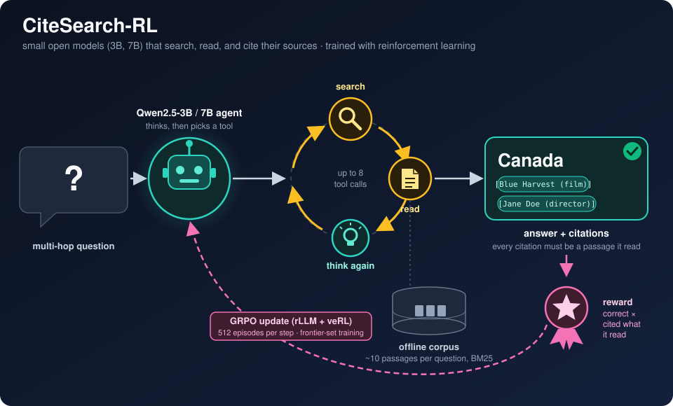
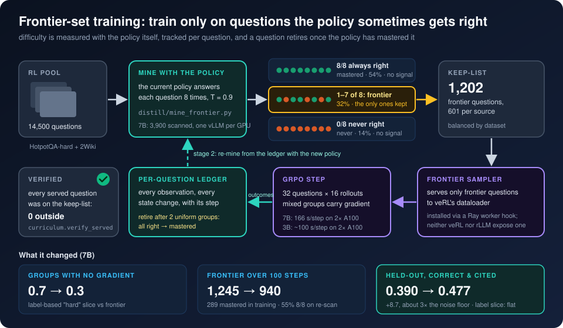
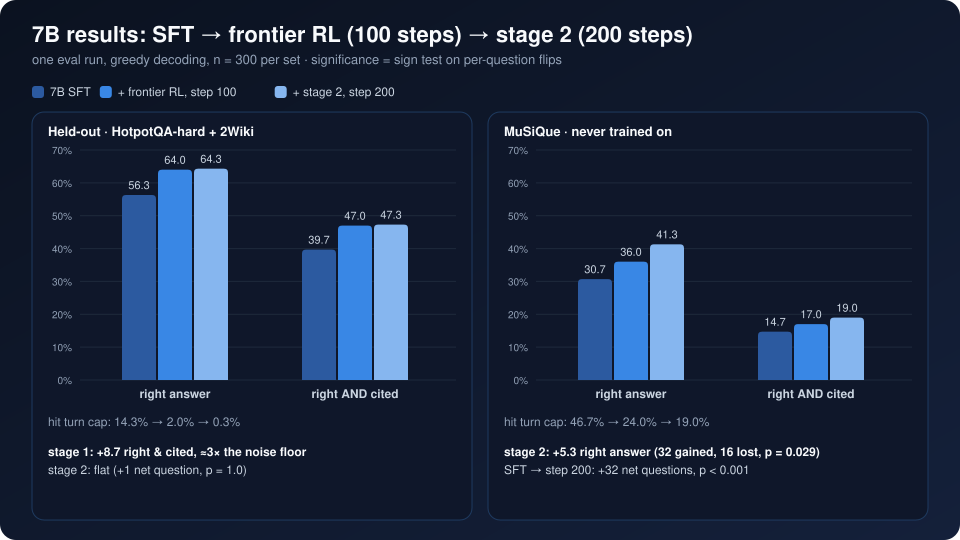
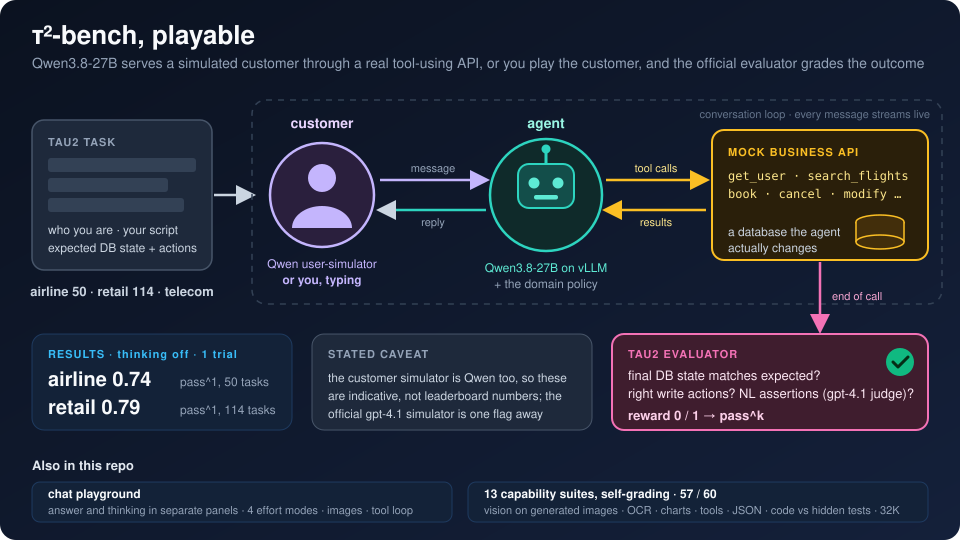
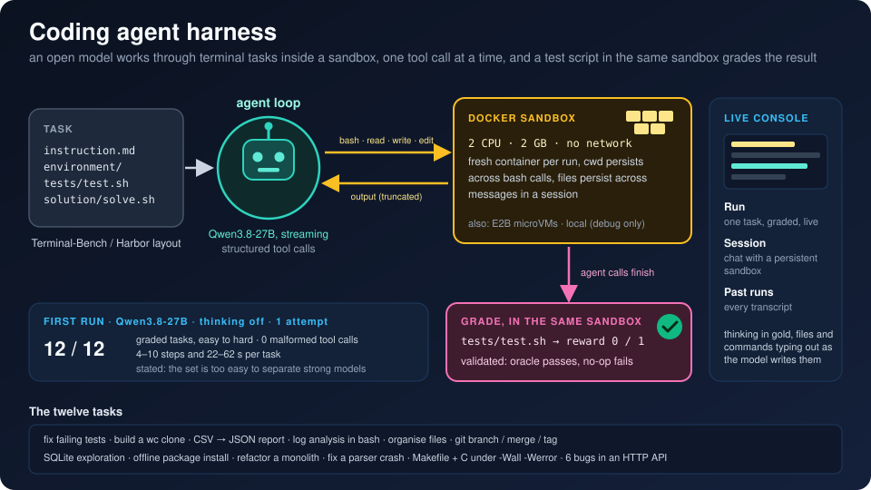
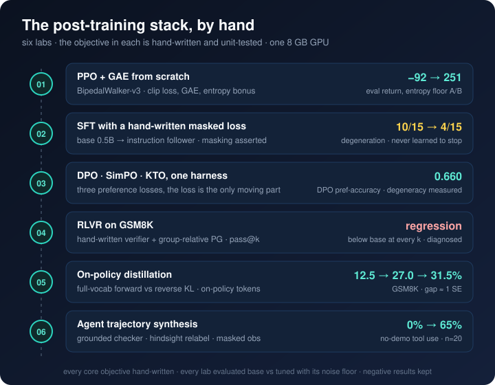

Projects



CiteSearch-RL
Small open models (3B, 7B) that search, read, and cite their sources — trained with reinforcement learning.
Hosted deep-research products push every turn of the research loop through a frontier API, and at volume
that is the cost. This project asks whether small open models can be trained to run the same
multi-turn ReAct loop instead: search a corpus, read what they found, search again, and commit to an answer that
cites only passages they actually read. Distillation from gpt-4.1-mini acting as the policy inside
the real environment, then GRPO with rLLM + veRL on one or two A100s with frontier-set training on questions mined
by the policy itself. Every number is reported on frozen held-out and out-of-distribution sets, with per-question significance
tests and predictions written down before each run.
- Reward gated on evidence, not just answers. A citation counts only if the passage is gold and the agent called
readon it; no citations means zero reward; fabricated citations are penalised separately. A right answer with no evidence trail is treated as a lucky guess. - Frontier-set training: questions picked by the policy, not by labels. The policy answers each question 8 times and only the ones it gets right 1 to 7 times are trained on; a per-question ledger records every outcome and retires mastered questions. Groups with zero gradient fell from about 70% to 30%, and the 7B's correct-and-cited rose +8.7 points on held-out, about 3× the noise floor, where a label-based “hard” slice had left it flat.
- Five RL runs on one recipe, to find out what actually moved it. A 3B control with the same frontier-set training improved citations and process but gained no correct answers; the 7B turned the same signal into +8.6 correct. Data selection makes the signal dense; model size decides whether it becomes right answers.
- Reported both ways. A second 7B stage to 200 steps left held-out flat and missed its pre-registered prediction; it lifted unseen MuSiQue by another +5.3 (p = 0.029) by finishing multi-hop chains instead of stopping one hop early. Both results are on the card and in the report.
- Built like a system. A FrontierSampler installed into veRL through a Ray worker hook, data-parallel vLLM inference across GPUs, three framework-level multi-GPU bugs root-caused in veRL and Ray source, unattended mine–train–eval chains with gates, and a 28-item findings register that keeps the hypotheses the data killed.

ProactiveClaw
The assistant that comes to you.
Most assistants wait to be asked, so the things that slip are the ones nobody asks about — the email you meant to answer tonight, the “I'll call her before Thursday” you said out loud, the task deferred three mornings running. ProactiveClaw keeps a care registry of those things and tends it: every morning it expires snoozes, escalates repeated deferrals, flags broken promises, writes a brief, and schedules a few specific nudges. During the day it picks up commitments from ordinary conversation and closes them when you mention you're done.
- Proactiveness is a dial, not a model behaviour. Five levels from off to max and five situational modes resolve into concrete settings — and the limits (daily cap, quiet hours, spacing) are enforced in the scheduling code rather than left to the model.
- Deterministic housekeeping before any LLM call, so each review starts from an already-tidy, already-prioritised state.
- Learns from how you react. Per-sender and per-topic pattern learning with exponential decay, and a contextual bandit over day × hour arms that learns the times you actually reply.
- Two-tier memory and isolated sub-agents. Vector store plus knowledge graph with passive entity recall; long-running work dispatched to process-isolated sub-agents with scoped tool profiles.
- Optional by construction. Connectors are gated on config and credentials — their tools are removed from the model's tool list entirely, so it can't assume access it doesn't have.

Qwen3.8-27B on τ²-bench, playable
A self-hosted open model serving simulated customers through a real business API, graded by the official evaluator.
τ²-bench is the standard test for customer-service agents: a scripted customer, an agent bound by a policy,
a mock airline / retail / telecom API with a real database, and an evaluator that checks the final database state,
the write actions and natural-language assertions. This project wires Qwen3.8-27B, self-hosted on one
A100 with vLLM (qwen3_8_27b_vllm_server), into Sierra's real tau2-bench and adds a console where every
message streams as it happens and you can be the customer yourself. The same repo carries a streaming
chat playground and 13 self-grading capability suites.
- The real benchmark, driven step by step. tau2-bench is a git submodule, not a re-implementation; the console drives its orchestrator turn by turn across airline (50 tasks), retail (114) and telecom, and ends with the evaluator's reward card explaining exactly why the run passed or failed.
- Two ways to run a task. Simulated: Qwen plays the customer from the script. Interactive: you type, then "End & grade". Batch numbers go through tau2's own runner for pass^k, with checkpointing and re-judging of saved conversations.
- Honest about the setup. The customer simulator is Qwen itself, so 0.74 / 0.79 are stated as indicative, not leaderboard; the official gpt-4.1 simulator is one flag away, and the NL-assertion judge is gpt-4.1 as in the official harness. Failure types are catalogued: duplicate writes, modify vs cancel vs exchange, unnecessary transfers.
- Capability suites that grade themselves. Vision, OCR and chart tests run on generated images with known ground truth; coding snippets execute against hidden tests; structured output is checked against schema, choice and regex; long context is a needle at 8K and 32K. When a grader was stricter than the model, the grader was fixed and logged.
- Thinking made visible. The playground streams the answer and the reasoning in separate panels with off / low / medium / xhigh effort, image attach, and a demo tool loop you can watch turn by turn. Deployment is documented to the flag, including the gotchas that crash-loop a pod.

Coding agent harness for open models
Watch an open model work through terminal tasks inside a sandbox, one tool call at a time.
A tool-using agent loop (bash, read, write, edit, finish) that runs Qwen3.8-27B against twelve graded
coding and terminal tasks inside Docker sandboxes with no network, plus a console where you watch a run
live or chat with the agent in a persistent workspace. Tasks follow the Terminal-Bench / Harbor layout, so the grader
is a test script executed in the same sandbox and the reward is 0 or 1. Works with any OpenAI-compatible endpoint
that supports tool calls (qwen3_8_27b_agent_harness).
- Graders you can trust. Every task ships an oracle solution that must pass and a no-op that must fail, and the harness validates both before the model is scored. Twelve tasks from easy (fix failing tests, a wc clone, CSV to JSON) to hard (six bugs in a stdlib HTTP API checked by a client).
- A loop built for long transcripts. Tool output is truncated to keep context bounded, the working directory persists across bash calls, several edits go out in one turn as parallel tool calls, and a fallback parser catches raw tool-call text if the server's parser ever misses.
- Isolation as a first-class choice. Docker via Colima or Docker Desktop by default (2 CPU, 2 GB, no network, fresh container per run), E2B cloud microVMs, or a local mode for debugging that is guarded by a confirmation.
- Three ways to look. Run: one task in a fresh sandbox, graded, with thinking in gold and files and commands typing out as the model writes them. Session: a persistent sandbox you talk to, where files survive across messages. Past runs: every batch with full transcripts.
- 12/12 on the first run, reported with its caveat. Zero malformed tool calls through vLLM's qwen3 parser, 4 to 10 steps and 22 to 62 seconds per task; one task passed the grader but hit the step cap re-verifying edge cases. The README says the set is now too easy to separate strong models, and harder tasks with pass@3 are the next step.
- More than an eval: a training environment. The pieces an agentic RL loop needs are already here: a fresh sandbox per rollout, a verifiable 0/1 reward from the task's own test script, full multi-turn transcripts, and repeats per task. That makes it usable for RL on coding and terminal-use agents (GRPO-style group rollouts per task), rejection-sampling SFT on passing transcripts, on-policy distillation where a teacher scores the student's own trajectories, and regression checks between model or prompt versions. Because it speaks any OpenAI-compatible endpoint, the same tasks can compare open models side by side.

Post-training labs
The modern LLM post-training stack, implemented by hand and evaluated honestly.
Six self-contained labs that build on each other: PPO with GAE → supervised fine-tuning → DPO / SimPO / KTO → RL with verifiable rewards → on-policy distillation → agent trajectory synthesis. In every one, the objective, reward, advantage or masking logic is written by hand and unit-tested; the data loading, training loop and evaluation gate are harness. Every lab reports base vs tuned on held-out data with its noise floor, and two of the six report a negative or mixed result rather than rounding it up.
- PPO from scratch on BipedalWalker: −92 → 184, stuck in a limp-gait local optimum; an entropy floor predicted from the theory and confirmed with an overlaid A/B took it to 251.
- SFT found a real failure a loss curve hides. Degeneration fell 10/15 → 4/15, but the model never learned to stop: the end-of-turn token is 0.7% of graded targets, so a token-averaged loss barely sees it.
- DPO's famous flaw, measured. Preference accuracy 0.660 with no length inflation, and the margin is entirely the difference-only artifact: chosen log-prob −3.91, rejected −7.89, margin = β × the gap exactly.
- RLVR that made the model worse, and why. Below base at every pass@k; a flat solve-rate, rising entropy and half-dead groups together diagnose too little training signal. The verifier probe was clean; the 40% shorter outputs were a side-effect of the group-relative advantage.
- On-policy beats off-policy distillation 31.5% vs 27.0% from a 12.5% base on GSM8K, with the caveat stated: the gap is about one standard error at n=200.
- Synthesised agent data that lifts tool use 0% → 65% without demonstrations, kept honest by a grounded checker that re-executes every trajectory and a relabelling step whose share is capped and whose goal entropy is reported.